Brand Identity
A monogram identity for a men’s clothing label built on quiet, “old money” ease — sharp enough for the event, easy enough for the bar.
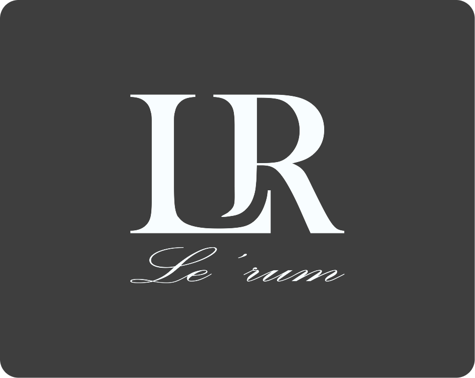
Design men’s clothing that can be worn to formal events, for after-work drinks, or as attire for visiting an upscale jazz bar — clothing that adapts to any situation while still elevating the wearer’s appearance.
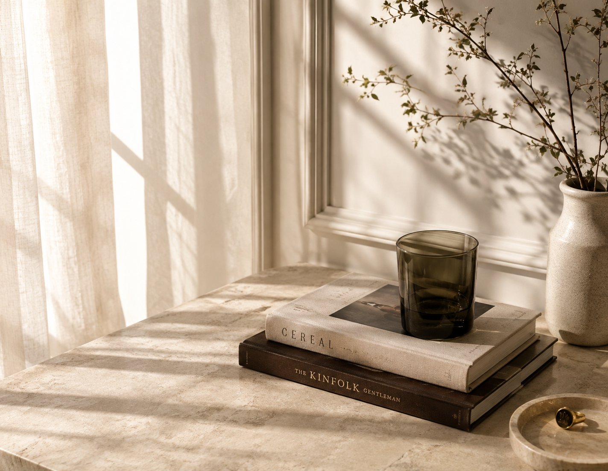
The hard part of the brief is that “old money” is a feeling, not a graphic device. It can’t be drawn with a crest or a serif cliché; it has to arrive through weight, spacing and restraint. The same mark also has to survive two opposite jobs — reading as considered next to formalwear, and reading as effortless on a Friday — without becoming either a luxury pastiche or a streetwear stamp.
Build the identity on the brand’s initials, L and R, merged with a single, perfectly balanced gap.
Keep every element “sharp yet casual” — formal enough for an event, relaxed enough to wear without thinking about it.
Carry the “old money” cue through thickness and solidity, not ornament, so it holds from a wax seal to a shopfront.
“Le’rum” can be read as the Thai word “เลิศรัม” — excellence — or simply as “Rum”. The brand blends the styles of cocktails with different bases to make clothing that reflects the feeling and mood of savouring each one.
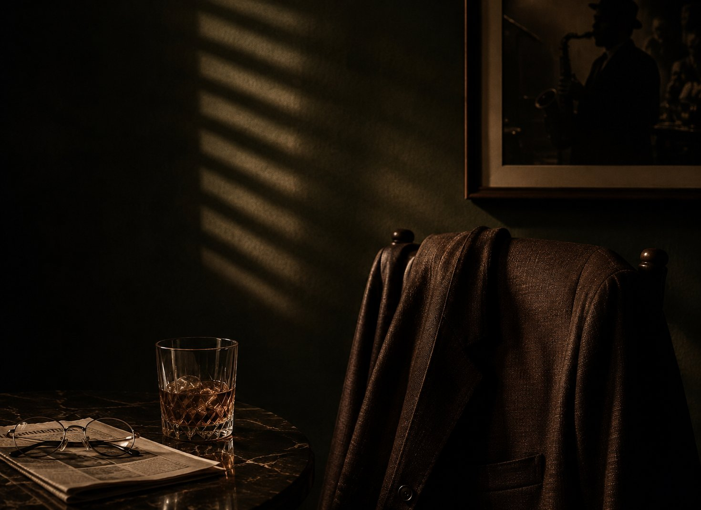
“Old money”, casual and elegant — menswear that looks inherited rather than bought this season.
One set of clothes that flexes across a single evening, adapting to the room without changing the wearer.
The formal event · the after-work drink · the upscale jazz bar — the three settings the clothing is cut for.
The wearer is one person in three rooms. The identity has to read the same in each.
Wants to look considered without looking like he tried. The garment emblem and the label do the talking; nothing shouts.
Same jacket, collar open. The mark has to survive being dressed down — it can’t depend on the full formal context to make sense.
Low light, close quarters. The details noticed here are the small ones: the tag, the stitch, the seal on the box it came in.
The core concept emphasises “old money”, casual and elegant styles — clothing that adapts to any situation while still elevating the wearer’s appearance. The identity is the smallest possible version of that idea: two letters, one gap, no decoration.
L and R merged into one mark with a single balanced gap — the primary signature.
“Le’rum” set in Palace Script MT, beneath the monogram.
A four-tone palette — espresso, navy, forest, cream — deep and unbranded.
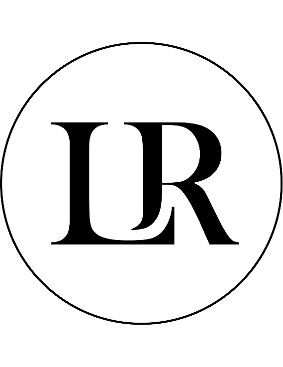
Circle badge and filled icon for stitching, stamping and small screens.
The monogram. Inspired by the initials L and R, merged together with a perfectly balanced gap, adding elegance through the design of the metal tag. Distinctive thickness and solidity — the characteristics of “old money”. Every element is modified to be sharp yet casual.
The wordmark. Palace Script MT, Regular — a formal English roundhand for “Le’rum” and any supporting script.
Colour. Four core tones: espresso #3D1E0F, navy #162842, forest #263319, cream #F9F3D7.
Colourways. Five approved lockups — on espresso, navy, forest, black-on-white, and on cream.
Reductions. An outline circle badge for a single-weight small mark, and a filled circle icon for avatars.
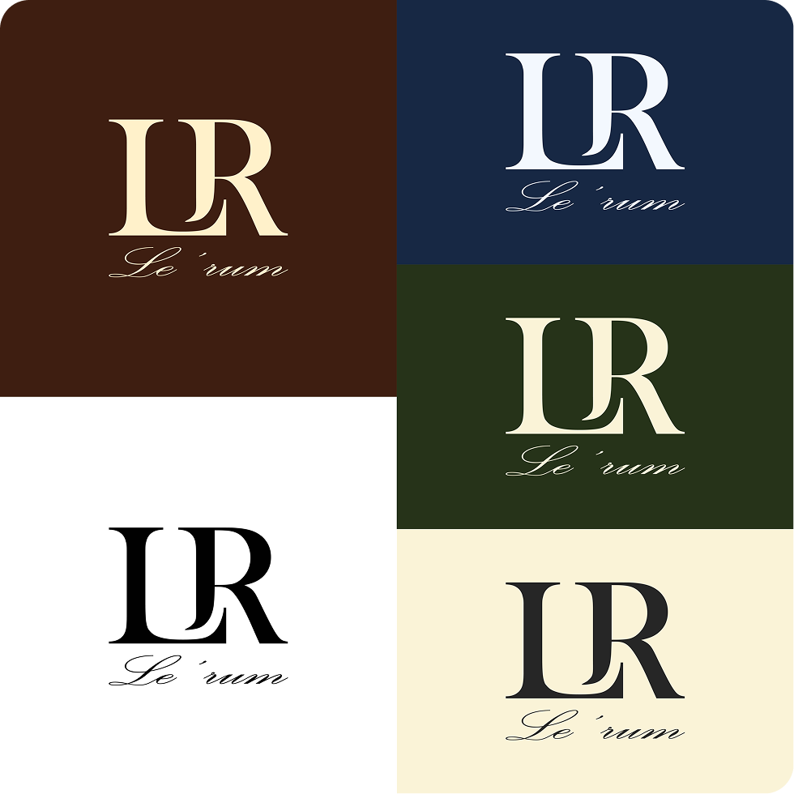
Hang tag & interior label — where the metal-tag thickness idea started.
Chest emblem, embroidered tonal and small.
Wax seal from a brass die — packaging and correspondence.
Circle icon and profile treatment for social.
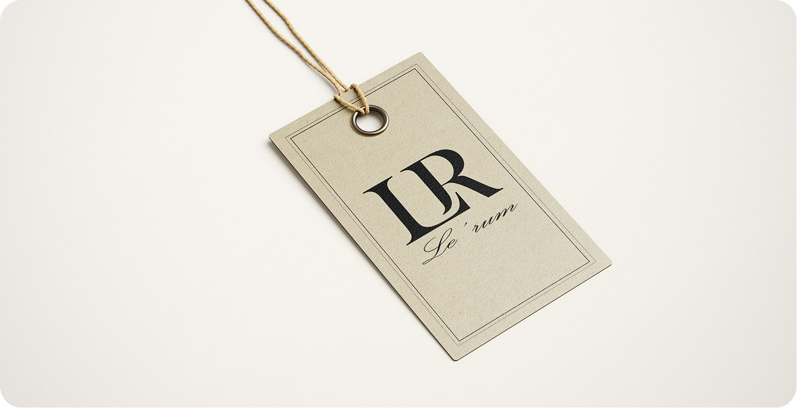
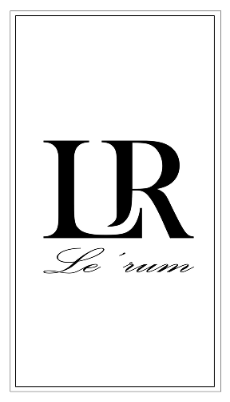
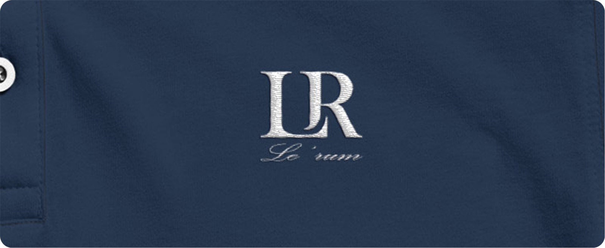
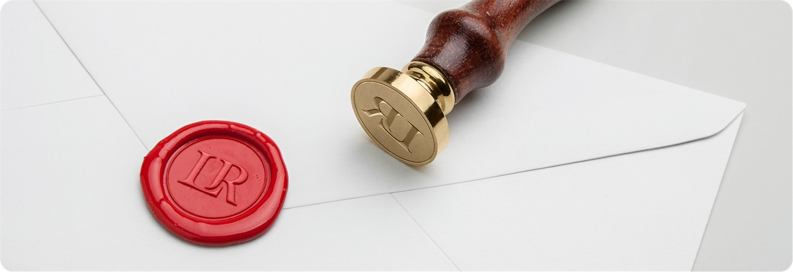
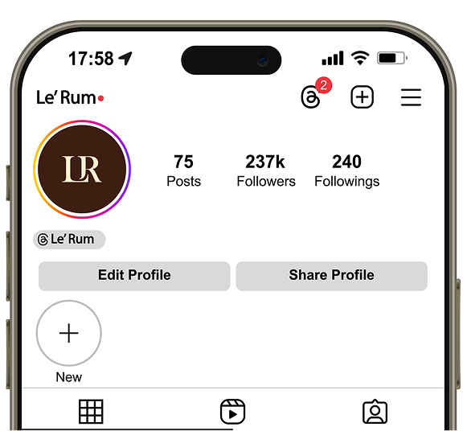
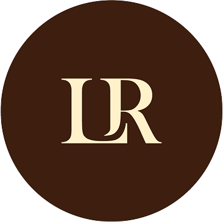
The “old money” read came from stroke thickness and one balanced gap — not a crest, not a flourish. Because the mark is just a flat shape, it drops onto a wax seal, a chest and a shopfront with no redraw.
Print, thread, wax and pixels each wanted a different reduction. Building the circle badge and the filled icon early — instead of stretching the full lockup — kept the small sizes honest.
Palace Script MT is delicate. At embroidery and woven-label sizes its thin strokes start to break up; a heavier weight or a redrawn alternate for small use should have been settled before the applications were built.